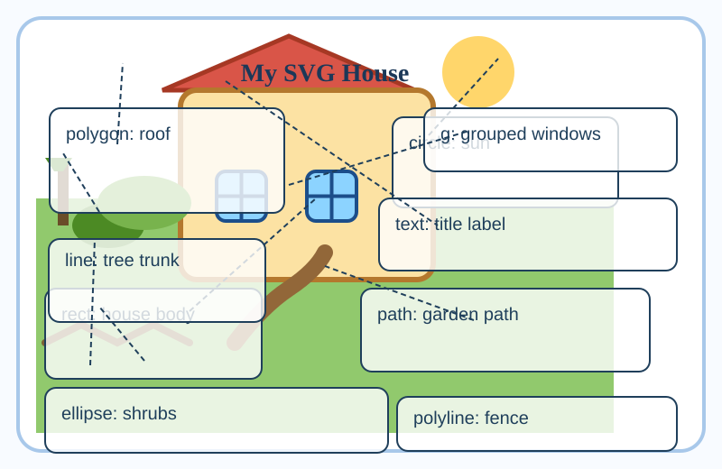
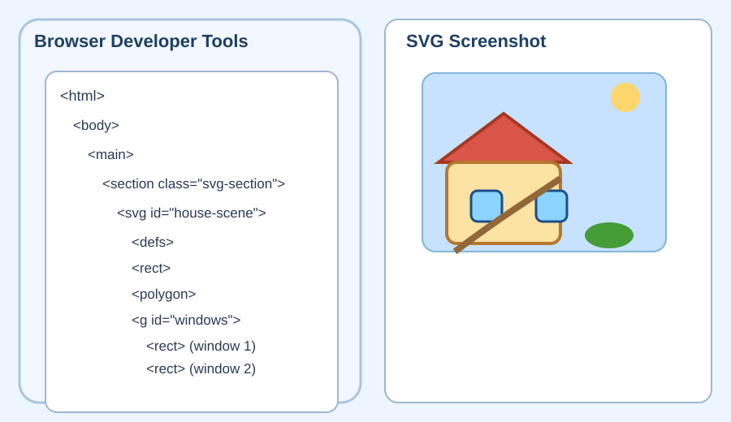

SVG House and Garden
This page uses all major SVG shapes and demonstrates grouping, translations, and styling. The two windows are grouped so they share the same style and can be moved together.
Annotated shape examples
Each image identifies a different SVG shape and how its coordinates correspond to the drawing.


Repository and AI notes
- Created a new Exercise 4.2 webpage with SVG shapes.
- Used an AI assistant to help generate the SVG illustration and annotations.
- Added grouped windows using `
` and `transform`/`translate` for layout.